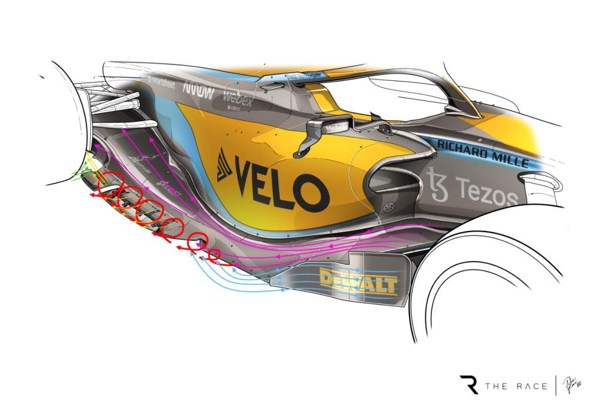

Table of contents |
|---|
| Abstract |
| Introduction |
| Analysis and Discussion |
| References |
The sidepods function as essential elements in contemporary Formula One car design because they perform various engineering tasks under strict regulatory conditions.
The sidepods, which are positioned between the front and rear wheels, contain vital mechanical components while also serving as critical elements for aerodynamic
efficiency and driver protection. This research examines Formula One sidepod engineering functions, including temperature management, airflow control, and
protection against side collisions. The study evaluates recent technical regulations, including the 2022 ground-effect rules, to demonstrate how sidepod design
has become increasingly important in modern racing. The research investigates how sidepod designs influence overall vehicle performance and competitiveness through
analysis of current Formula One data.
Formula One cars represent the most advanced racing vehicles in motorsport, with every component engineered to maximise performance while complying with strict
regulations. The sidepod section, which runs between the front and rear wheels, forms a fundamental part of the bodywork structure. The introduction of ground-effect
regulations in 2022 has heightened the importance of sidepod design by removing several aerodynamic devices that previously managed airflow. This article examines
Formula One sidepods from an engineering perspective, focusing on their roles in cooling systems, aerodynamic performance, and driver protection.
Sidepods are large aerodynamic bodywork structures located on each side of a Formula One car and attached to the main monocoque. Their primary functions include housing cooling components, managing airflow around and through the car, and enhancing driver safety. Since 2022, Formula One regulations have increased the aerodynamic significance of sidepods by banning devices such as bargeboards, forcing teams to rely more heavily on sidepod geometry to control airflow. One of the key purposes of sidepods is cooling. With power outputs approaching 1000 horsepower from combined combustion and hybrid systems, Formula One cars generate significant heat (Scarborough, 2019). Sidepods contain radiators that dissipate this heat, with coolant circulated by water pumps and regulated by thermostats. Air enters through the sidepod inlet, flows through the radiators and heat exchangers, and exits at the rear of the car with minimal aerodynamic disruption. Sidepod inlet size is adjusted depending on race conditions: larger inlets improve cooling but increase drag, while smaller inlets reduce drag but raise the risk of overheating. High-temperature or high-altitude circuits such as Singapore and Mexico City therefore require larger inlet openings. Sidepods also play a critical role in aerodynamics and downforce generation. Their shape is used to manipulate airflow towards the rear of the car, reducing drag and improving rear tyre performance. Wide sidepods can create controlled outwash that pushes turbulent air away from the rear tyres, reducing pressure build-up and improving traction (Opong, 2023). Additionally, modern sidepods feature pronounced undercuts that channel high-energy airflow towards the edges of the floor. This strengthens the ground-effect airflow beneath the car, enhancing diffuser efficiency and increasing downforce without significant drag.Figure 1: McLaren sidepod geometry highlighting airflow management and undercut design (The Race, 2023).
| Flow Path | Approximate % of Total Airflow |
|---|---|
| Air into radiator inlet | 30% |
| Air directed under car floor | 50% |
| Air flowing around bodywork | 20% |
Mercedes ‘zero-pod’ concept (2022)
Red Bull Racing downwash sidepod concept
Figure 2: Comparison of Mercedes' narrow ‘zero-pod’ concept and Red Bull Racing’s wide downwash sidepod philosophy, illustrating contrasting aerodynamic approaches (Motorsport.com, 2022; Racecar Engineering, 2023).
motorsportengineer.net (n.d.) Why Sidepods Are Such An Important Feature In Formula 1. Available at:
https://motorsportengineer.net/why-sidepods-are-such-an-important-feature-in-formula-1/ (Accessed: 3 December 2025).
Scarborough, C. (2019) F1 car cooling systems explained. Motorsport Technology. Available at:
https://motorsport.tech/formula-1/car-cooling-systems-explained (Accessed: 3 December 2025).
motorsportengineer.net (n.d.) Mastering The Heat: How Formula 1 Defy Overheating Challenges. Available at:
https://motorsportengineer.net/mastering-the-heat-how-formula-1-defy-overheating-challenges/ (Accessed: 3 December 2025).
Opong, R. (2023) Sidepods On F1 Cars: What They Are & How They Work. Flow Racers. Available at:
https://flowracers.com/blog/f1-car-sidepods/ (Accessed: 3 December 2025).
High Power Media (2014) Formula One side impact structures. Available at:
https://www.highpowermedia.com/Archive/formula-one-side-impact-structures (Accessed: 3 December 2025).
FIA Institute (2013) New F1 side impact system. Fédération Internationale de l’Automobile. Available at:
https://www.fia.com/sites/default/files/basicpage/file/FROM%20AUTO%233%20NEW%20F1%20SIDE%20IMPACT%20SYSTEM.pdf (Accessed: 3 December 2025).
Somers, J. (2023) Understanding Red Bull’s sidepod philosophy. Racecar Engineering. Available at:
https://www.racecar-engineering.com/articles/f1/understanding-red-bulls-sidepod-philosophy/ (Accessed: 3 December 2025).
Formula1.com (2025) Analysis: Ferrari sidepods hint at unique direction for their 2022 F1-75. Available at:
https://www.formula1.com/en/latest/article/analysis-ferrari-sidepods-hint-at-unique-direction-for-f1-75.7CoDEDU1HKSZHZmv6Ri3eM (Accessed: 3 December 2025).
F1 Historian (n.d.) Formula 1 Cooling Systems Explained. Available at:
https://www.f1historian.com/tech101/Formula%201%20Cooling%20Systems (Accessed: 3 December 2025).
Motorsport Week (2022) Technical Insight: Many differences on sidepod design. Available at:
https://www.motorsportweek.com/2022/03/12/technical-insight-many-differences-on-the-sidepods-design/ (Accessed: 3 December 2025).